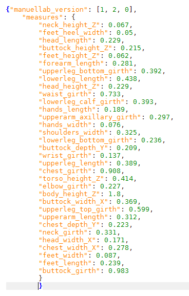

Import and export the body measures of the character
In the "Body, face and measure parameters" panel, if the "body measures" is checked, it's possible to import and export the human measures.

With "Export measures" and "Import measures" buttons you can save or load the data as plain text file, using the simple json syntax:

Export the measures is very different from saving the whole character. The file will only contain the values of the main body measures, so all the anatomical details (like the shape of nose, mouth, head, ecc..) will be lost!
On the other hand, when the user will import the measures on an existing character, the anatomy details will be preserved, but the body shape will be changed in order to match the measures stored in the file.